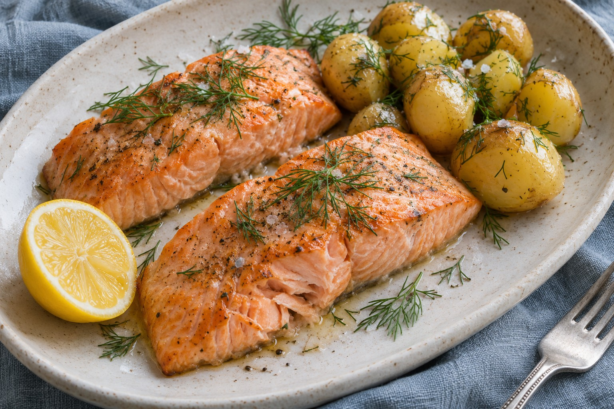
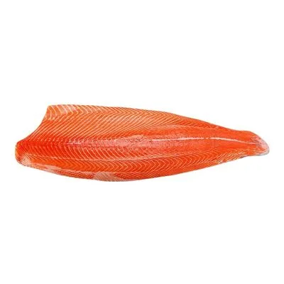

Стейк лосося
259 ₽ 299 ₽ за 100 г
Рыба, икра и морепродукты в Петербурге. Доставка возможна в день заказа.
Открыть каталог Проверить доставкуПример полки по акции от 14 ноября. Цены показаны на дату публикации.
259 ₽ 299 ₽ за 100 г
1 550 ₽ 1 790 ₽ за кг
В одной из акций магазин показывал тушки прямо в руках и указывал цену за килограмм. Спросите, что есть в продаже сегодня.
Холодного копчения
Холодного копчения

Что взять впервые
Возьмите около 500 г филе и попросите разделить на два куска. К запечённой рыбе подойдут молодой картофель, укроп и лимон.
Выбираю к праздничному столу →В прототипе представлена выборка. Цены и наличие уточняйте в действующем магазине.
«Меня зовут Алексей. 10 лет привожу в Питер рыбу — ту, что сам бы съел.»
Из обращения Алексея к покупателям, 20 мая
В альбоме встречи — 16 фотографий. На обложке гости собрались за одним столом.
У команды можно спросить, какая икра сейчас в продаже и как нарезать рыбу для вашего блюда.
Посмотреть варианты разделкиВ сообществе есть альбомы с победителями конкурсов, отзывами и блюдами подписчиков.
Готовая продукция
Роллы, суши и поке, когда хочется рыбы без готовки.
Выбрать готовоеРецепт магазина · на четверых
Лангустинов можно заменить креветками. Для соуса понадобятся сливки и лук-порей.
Открыть рецепт и выбрать порцииЧто будете готовить? От этого зависит, как попросить нарезать рыбу.
Филе срезают вдоль хребта. Для двух порций можно взять один кусок и попросить разделить его пополам.
Целую рыбу режут поперёк. В центре каждого стейка остаётся кость. Укажите такую нарезку при выборе целой форели.
При разделке целой рыбы на филе можно попросить отложить голову и хребет отдельно. Магазин уточнит возможность при сборке.
Окончательная сумма за весовую рыбу зависит от веса тушки или куска.

«Ребята всегда оперативно привозят в этот же день)))»Дарина Цыплякова · 27 мая 2024
«Разделка рыбы замечательная! Очень внимательно относятся к пожеланиям по заказу.»Елена Митянина · 4 июля
«Только в Курильском береге икра отменного качества, без излишней горечи.»Елена Бочалова · 23 ноября 2024
По Петербургу заказ можно получить в тот же день. Время согласуем при оформлении. Стоимость зависит от адреса и суммы заказа.
Выберите в корзине цвет зоны с карты.
Вопрос по качеству или упаковке?